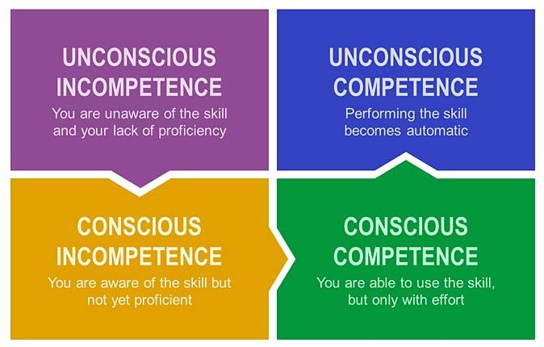

Four Stages of Learning

Unconscious Incompetence
Learner is unaware of what they don't know and can't be expected to participate in solution
Challenge
Learner is lacking awareness
Needs
Skills assesments, encouragement
Conscious Incompetence
Learner is aware of skill or knowledge gap & understands implications of acquiring the new skill
Challenge
Learner can become overwhelmed, negative thinking
Needs
Learning resources, affirmations, discipline
Conscious Competence
Learner knows how to use skill but doing so requires conscious thought and hard work
Challenge
Time and motivation are required to pursue opportunities to practice skill
Needs
Practice, patience, support
Unconscious Competence
Learner has enough experience to perform task easily with minimal thought
Challenge
Vocabulary and jargon is second nature, so communication must become deliberate
Needs
Continued practice (can move backwards if skill is not used)
Reflective Competence
Mentoring opportunities
Takeaways
- Learning is always a process and you've been through it countless times
- Outline of how to move on to next stage
- Different emotional states apply to different stages
- Manage expectations
- Giving up is tempting; transformation happens with perseverance
How does this apply to product teams?
Being a developer?
Knowledge sharing or mentoring?